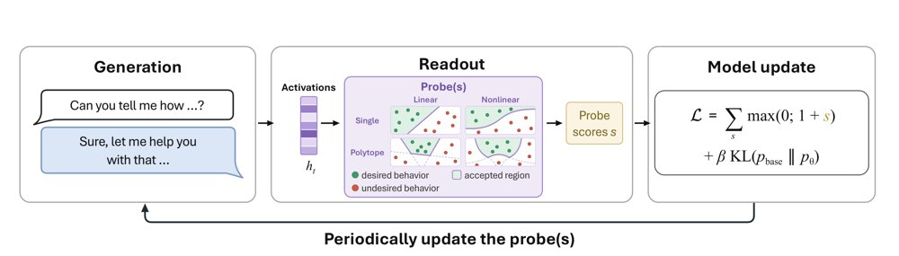
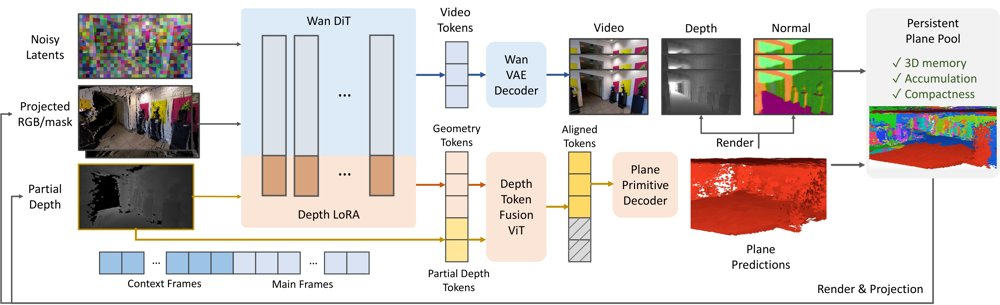
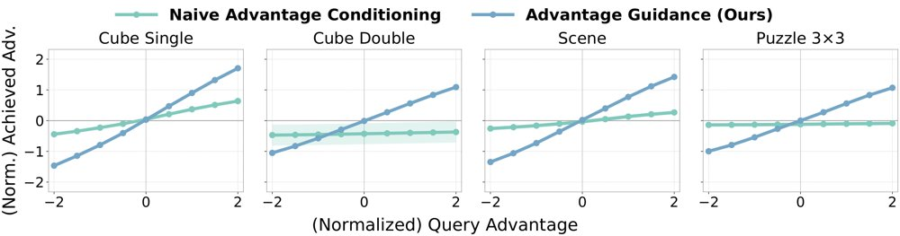
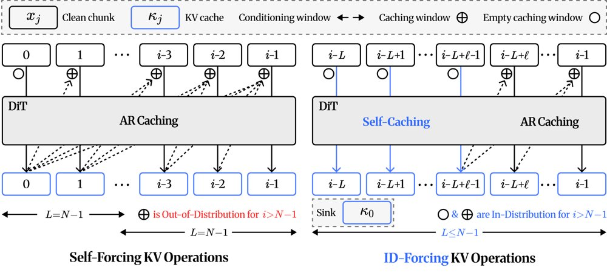
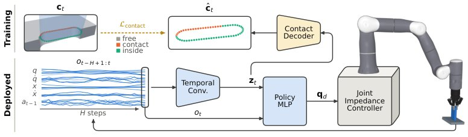
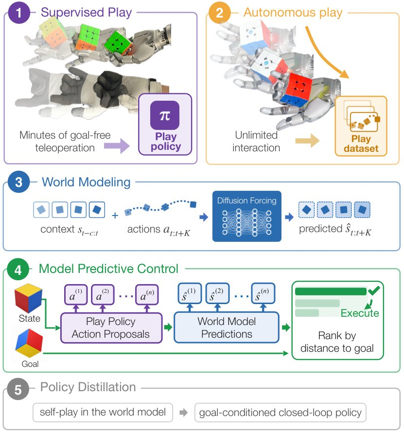

用探针当训练信号，对齐同时保住可监控性
用探针分数作唯一对齐信号，持续更新探针让 Mistral 7B 在 GCG 攻击下的 StrongREJECT 从 0.

训练流程概览：每步生成 on-policy 补全并读取激活，由一或多个探针打分，损失把激活推离探针判定的有害一侧并配合 KL 约束，每次 LoRA 更新后再更新探针若干步。
解决了什么问题。主流对齐方法只监督模型输出的文本，奖励「看起来对齐」的回答，模型可能在训练中伪装合规而不真正内化目标行为。把监督信号直接定义在模型内部激活上，能否绕开这种表层合规，此前尚无定论。作者以有害性和诚实性两个目标检验了这一问题。
方法。每一步从当前模型采样 on-policy 补全，读取残差流激活，用一个或多个线性/非线性探针打分；损失把补全 token 的激活以 margin 推向探针判定边界的期望一侧，同时用 KL 项约束对基座模型的漂移，只训练 LoRA 适配器。关键变量是探针的更新方式：冻结、每次模型更新后继续拟合若干步，或从零重训。作者在去掉拒答方向的 Llama 3 8B Instruct、Mistral 7B Instruct v0.1 和推理模型 Qwen3-14B 上分别验证有害性与诚实性。
关键结果。冻结探针会被绕过：探针损失降到零，但 StrongREJECT 在所有模型和探针变体上仍高于 0.40。持续更新探针则大幅降低有害性，以保留至少 95% 基座效用的检查点计，Mistral 7B 的 GCG 分数从 0.52 降到 0.01、prefill 从 0.77 降到 0.03，去掉拒答方向的 Llama 3 8B 上分别为 0.34→0.13 和 0.72→0.14。诚实性方面，Qwen3-14B 在 MASK 上的得分从 0.47 升至 0.63（线性探针）、0.70（K=16 非线性多面体）和 0.75（线性多面体），效用基本不变。同数据预算下，其安全–效用权衡优于 DPO 与推理时 steering，仅在 5,000 对数据时与 DPO 相当；重新拟合的线性探针在训练后仍达 AUROC 0.85–0.90（有害性）和 0.98–0.99（不诚实）。
为什么值得看。它表明对齐可以直接塑造模型内部表征而不只是输出，并且训练后目标概念仍可由简单线性探针独立审计，为「可解释性工具不该用于训练」的禁令提供了一个反例。
局限 / 存疑。行为副作用明显：模型很少显式拒绝（所选检查点上最多 1%），更多是把有害请求重新解释为良性问题、给出占位内容或产生破坏性文本，Mistral 上尤其突出。此外攻击并非针对探针干预自适应，且后续仅用良性数据的有害微调即可抹去已灌输的安全性（如 0.09→0.83）。
基础大模型 & 基础模型底层研究
模型可解释性、模型内部机制
alphaXiv · arXiv
让决策模型接管 Agent 的每步选择
论文构建 JevAgentHarness，把 Agent 中的选择题外包给决策模型，并用两阶段预注册协议检验成功率是否下
在 L1 孤立问题上，各决策模型的准确率与每 1000 次决策成本（对数坐标）对比，Jev 以约 1/50 的成本比 Flash 低 1.7 个百分点。
解决了什么问题。现有 Agent harness 几乎每一步都调用一次大模型，而多数调用最终只是一个多选题决策，例如下一步调用哪个工具，这让长任务又慢又贵。小得多的决策模型可以更快更便宜地回答这类问题，但把决策权部分交给它们会不会牺牲任务成功率，此前缺少在真实 Agent 内部的系统评测。孤立问题上的准确率能否预测任务层面的表现，也是未知数。
方法。作者搭建 JevAgentHarness，让 harness 在每个决策点把状态文本和一个带类型的问题（选项选择或是否判断）发给决策模型，由它代替大模型作答。评测分两阶段：Stage 1 单独测试每个委派点，只保留比纯 LLM 更便宜且在 5% 显著性水平下单侧检验显示任务成功率损失小于 3 个百分点（τ²-bench 上为 5 个百分点）的委派；Stage 2 在新任务上把这些通过的委派组合起来测试。模型、任务与检验均预注册，Stage-2 方案在读取任何 Stage-1 结果之前就已登记。
关键结果。在孤立问题上，Jev 的准确率比 Flash 低 1.7 个百分点，成本只有后者的 1/50；在单张 L4 GPU 上，AgentDecision-4B 与 AgentDecision-0.8B 每次决策的成本分别约为 Jev 的 1/4 和 1/9。但任务层面的排名与孤立问题不一致：StartLux-9B 在 BFCL 工具选择上准确率最高（92.2%），却只解出 69.5% 的任务；AgentDecision-4B 的 BFCL 准确率较低（89.3%），任务成功率却达 91.5%，Jev 为 82.0%。步骤级准确率与任务成功率的 Kendall 相关系数为 0.84，差距集中在 must-ask 状态：AgentDecision-4B 答对 67.4%，Jev 答对 58.3%。
为什么值得看。它说明决策模型的价值要在 Agent 内部测试、部署和训练才能体现，孤立基准上的分数会误导模型选择，这为降低长任务 Agent 的推理成本提供了一条可验证的路径。
局限 / 存疑。作者主动披露了若干污染风险：在 Stage-1 结果被封存之前，训练 v1 的人曾打印过一个 Stage-1 轨迹文件的首条记录以了解格式，严格来说 AgentDecision-4B v1 的两项 Stage-2 检验只能算探索性；另一条探索性工作线的代码检出中还含有已注册 τ² 迁移检验的选择摘要。此外 Intern-Decision 与 StartLux-Decision 在评测任务清单冻结前就已发布且训练数据未公开，无法排除与公开 L1 题目重叠。
AI 智能体 Agent / 自主智能
alphaXiv · arXiv
情绪化表达致LLM过度拒绝，新方法反向干预
情绪化措辞会推高良性请求的拒绝率；EmoRSS在拒绝子空间反向干预，两模型平均良性拒绝率降至7.29%。

EmoRSS流程：先定位拒绝敏感层并用对齐的SAE特征构造拒绝子空间，再估计常规与情绪请求之间的激活偏移，最后在推理时反向干预。
解决了什么问题。现有工作多关注情绪或心理线索如何提高有害请求的攻击成功率，较少考察它们对良性请求的影响。作者发现，同一任务内容与风险不变时，加上情绪化表达会让模型从给出实质回答转为只提供安抚，形成情绪诱导的过度拒绝。
方法。EmoRSS先用逐层线性探针定位拒绝敏感层（Llama-3.1-8B-it为第22层，Qwen3-8B为第25层），并把该层探针权重映射为拒绝方向；再选取与拒绝方向最对齐的Top-32个SAE解码方向构造拒绝子空间。随后用配对的常规与情绪请求估计子空间内的平均激活偏移，将其解码为干预向量，在推理时以可控强度反向施加，且不更新主干参数。
关键结果。在两个模型上，EmoRSS把平均良性拒绝率（BRR）都降到7.29%，有害请求合规率（HCR）分别为0.00%（Llama-3.1-8B-it）和2.08%（Qwen3-8B）；Llama的BRR由21.35%降至7.29%，Qwen3-8B由22.91%降至7.29%。MMLU准确率为60.3%（无干预58.4%），XSum ROUGE-1为27.1%（无干预27.0%）。在每模型128条良性情绪请求上，实质回答数Llama由98增至112，Qwen由110增至119。
为什么值得看。情绪表达在客服、医疗和危机咨询等真实交互中很常见，过度拒绝会让安全对齐从“更谨慎”变成“不帮忙”。EmoRSS提供了一种推理时、无需微调的激活干预思路，试图在保持拒答有害请求的同时恢复对良性请求的实质帮助。
局限 / 存疑。作者明确不主张没有安全代价：Qwen3-8B的平均HCR由0.52%升至2.08%，且主实验的ρ=20/10属于放大干预，不能解释为对自然情绪偏移的精确抵消。结果目前只覆盖两个8B级模型和构造的情感模板，跨模型与真实情绪分布的泛化仍需验证。
基础大模型 & 基础模型底层研究
模型可解释性、模型内部机制
alphaXiv · arXiv
不训练也能纠幻觉：沿置信度梯度推激活
高通AI研究院提出免训练方法USteer：用置信度梯度在推理时修正中间层激活，不改参数，多数推理设置上优于基线。

USteer整体示意：在中间Transformer层的输出上用语言模型头计算置信度分数，并沿其梯度做单步引导，同时给出GSM8K上的输出对比示例。
解决了什么问题。大模型在多步推理中会生成看似合理却错误的答案，现有做法多把推理时的不确定性分数用于事后检测或拒答，属于被动过滤。另一类激活引导方法则依赖监督探针学出固定的「真实性方向」，在所有解码步上施加同一位移向量，难以适应思维链中不断变化的中间表示。作者希望把置信度信号前移，直接用于生成过程的在线控制。
方法。USteer把NCI风格的置信度分数（隐状态与目标词向量的平方余弦相似度）当作可微目标，在若干上层中间层用logit lens计算该分数，对隐状态求梯度并做单步梯度上升，把表示推向低不确定性区域。梯度经RMSNorm按链式法则回传到残差流，只更新激活、不更新任何参数，也不需要额外监督。每步只做一次归一化后的梯度修正，强度α与引导层数按模型和数据集设定，例如Llama-3.2-1B-Instruct取最后3层。
关键结果。在Llama-3.2-1B-Instruct上，USteer把CSQA从50.94提升到54.05、StrategyQA从58.52提升到63.32、GSM8K从34.19提升到36.24、AQuA从37.80提升到39.37；在Qwen-2.5-3B-Instruct上分别为77.72→79.20、68.56→70.74、79.91→80.97、54.72→55.12。延迟从12.5升至12.8、从21.5升至22.8毫秒/token。低置信区间收益更大：相对贪心解码，全体样本净增+2.6个百分点，最低25%置信区间+6.7，最低5%区间+14.4，均高于DoLa、ITI、TruthX。附录中Qwen-2.5-14B-Instruct与Qwen-3-32B上也有一致但更小的提升（如Qwen-3-32B的GSM8K从94.54到95.00）。
为什么值得看。它把幻觉检测中用到的内部置信度信号从「事后判官」变成「实时控制器」，且不需要训练探针，为推理时可靠性控制提供了一个轻量、可与其他解码策略叠加的思路。
局限 / 存疑。方法需要读取中间隐状态并反传梯度，因此无法用于封闭的黑盒API；作者自己的bootstrap分析显示StrategyQA与AQuA的95%置信区间约为±6个百分点，与多数提升幅度相当，贪心解码下的优势尚不能断言统计显著，且α需按数据集调参，对「自信地答错」的样本可能反而强化错误。
模型可解释性、模型内部机制
alphaXiv · arXiv
平面基元充当视频世界模型的持久记忆
PPMem 把约10万个平面基元当作视频世界模型的持久3D记忆，在 DL3DV 与 RE10K 上视频指标全面领先。

架构图：Wan DiT 接收与投影源视图 RGB/掩码及平面池渲染的部分深度通道拼接的噪声视频隐变量，输出视频 token 与经几何 LoRA 和 Depth Token Fusion 处理后的几何 token，后者解码为逐帧平面基元并合并进持久平面池，再为下一块渲染条件。
解决了什么问题。视频世界模型要生成并探索大范围场景，就需要对已生成内容保留一份持久的三维记忆。现有做法要么完全没有显式3D状态，要么用逐像素点云、surfel、TSDF 或原始帧库充当记忆，难以同时做到紧凑、几何显式、跨视角一致和可随生成过程更新。作者据此提问：平面基元能否直接充当视频世界模型的持久3D表示。
方法。PPMem 基于 5B 的 Wan 2.2 视频扩散 Transformer，额外接一个由 Plana3R 改造的平面预测头，从 DiT 特征回归每个平面基元的 7 个参数（中心深度、两个矩形尺寸、旋转四元数），并用可微矩形高斯栅格化渲染深度与法向。模型还加了一个 Depth Token Fusion 模块：把平面池渲染出的部分深度用 16×16 patch 卷积和 ViT-Base 编码成 token，再与 DiT 特征融合；同时采用三级掩码，用来丢弃空洞和部分覆盖的 patch。推理时每约 25 帧为一块，块内视频与平面几何联合产生，新平面经遮挡删除、质量去重、前瞻剪枝等步骤并入全局平面池，再在下一块的目���相机上渲染成深度作为条件；训练分两阶段，第二阶段冻结视频主干，只训练几何模块与 LoRA。
关键结果。在 DL3DV 上，N=49 时 PSNR 为 16.99（Gen3C 15.74、SPMem 14.70），DINOv2 相似度 0.861；N=121 时 PSNR 13.98、DINOv2 0.769（Gen3C 0.585）。RE10K 上 N=49 时 PSNR 22.46、LPIPS 0.168、DINOv2 0.949，N=121 时 PSNR 19.34。作者指出其基座模型（Wan 2.2 5B）比 Gen3C（Cosmos 7B）和 Voyager（HunyuanVideo 约13B）都小。长序列（约300–400 帧）评测中，DINOv2 在第300帧领先次优方法约 0.27。平面池约 10 万平面、约 5 MB（4.8 MiB），相对同一轨迹累积的逐像素点云 1.7 GiB。消融中联合平面池的 δ<1.25 为 70.3，对比无持久记忆 64.0、MoGe-2 点云 55.0、事后 Plana3R 57.0。
为什么值得看。它把「记忆」从逐像素几何压缩成一组显式平面，使长视频生成同时输出米制深度、法向和可导出的平面表面，为可编辑、可复用的世界模型提供了一种轻量路径。
局限 / 存疑。该方法依赖平面先验，在植被、水面等非结构化场景中细节可能不如基于点云的方案；DL3DV 上场景平面覆盖率与 PSNR 的 Spearman 相关仅 0.33，低平面度场景 PSNR 降至 12.98。训练采用冻结视频主干、只训几何适配器的两阶段设计，放弃了视频与几何目标的端到端共同适配；消融也显示在深度对齐良好时 DTF 与单纯通道拼接表现相当，其优势主要体现在尺度不完美时的稳健性，且训练外的极端相机轨迹会退化。
生成式 AI
计算机视觉 CV
alphaXiv · arXiv
把几何模型的注意力蒸馏进视频扩散模型
冻结的几何模型提供跨帧对应关系，训练时用来监督视频注意力，推理阶段不增加任何开销。

冻结的几何教师从干净视频中提取对应关系，在去噪过程中引导视频模型的注意力，该监督只在训练时加入，不改变推理流程。
解决了什么问题。视频扩散模型能生成视觉上可信的短片，却难以在视角变化和物体运动下保持场景几何与物体结构。作者进一步发现，视频模型的跨帧注意力本身就无法可靠地定位同一场景元素，响应往往散落在多个区域，即使场景结构已经清晰浮现。
方法。GAD 从冻结的几何基础模型 VGGT-Ω（1B）的注意力中提取跨帧对应点，只对干净视频做一次前向并缓存，把目标帧获得的总注意力质量作为可靠性权重，对可能不可靠的匹配降权。训练时在视频 DiT 的某一层上，用高斯平滑后的软目标做配对监督（帧对内的空间判别）和轨迹监督（同一源点对多帧的时间覆盖），并与原 flow-matching 损失联合优化。由于结构形成在高噪声时出现在深层、低噪声时出现在浅层，监督层按噪声时间步路由（t<850 用 L5，850≤t<950 用 L15，t≥950 用 L25）。
关键结果。在三个 Wan 骨干上，GAD 在 RealEstate10K、DL3DV-10K 的 15 秒长视频生成和 OmniWorld-Game 的 5 秒动态生成中均优于对应基线。Wan2.2 5B 上跨帧匹配命中率相对提升至少 30%：RealEstate10K 从 0.263 升到 0.350，DL3DV-10K 从 0.257 升到 0.335，旋转误差从 9.573 降到 4.890 度。Wan2.1 14B 在两个数据集的全部七项指标上取得最优。动态集上 Wan2.2 5B 的主体一致性从 0.825 升到 0.853、背景一致性从 0.900 升到 0.913。消融显示，噪声路由（R8）优于所有固定层方案（如 L25 全噪声 6.540 度）；而不用置信度加权时，命中率反而低于 Wan 基线（0.230 对 0.257）。推理时间与峰值显存基本不变。
为什么值得看。监督只发生在训练阶段，推理时不需要教师模型、对应缓存或额外模块，这使它可以直接叠加到现有视频 DiT 上，为交互式世界建模、机器人规划和自动驾驶仿真提供更长期一致的视频生成。
局限 / 存疑。对应目标的质量受限于 VGGT-Ω 1B 教师的匹配能力和空间分辨率，遮挡、运动物体与外观歧义处仍是短板；层路由只在训练前按噪声时间步固定，不随模型表示演化调整，且仅在双向 Wan 模型上验证，自回归生成未测试。另外 5 秒与 10 秒设置下 FID/FVD 有小幅退步（5 秒 FID 从 26.85 升到 27.63）。
生成式 AI
alphaXiv · arXiv
两阶段预训练让一步生成训练算力降一个量级
先用固定噪声水平的去噪重建做预训练，再做特征空间分布微调，Priming Models 在 ImageNet 一步生成上

图 1：Priming Models 显著改善 ImageNet 上训练算力与 FID 的权衡（左），简单的重建预训练提供了有效初始化，使后续分布后训练大幅提效（右）。
解决了什么问题。扩散与流匹配模型推理时需多次网络评估，一步生成成为研究热点，但现有方法依赖一致性建模、流映射、蒸馏教师、无分类器引导、风格嵌入等复杂训练机制。直接从零优化分布匹配目标（如 Sinkhorn、MMD）又长期受困于优化不稳定，需要大量工程技巧。论文因此追问：训练一步生成器真的需要这么复杂吗？
方法。作者提出 Priming Models 两阶段框架：第一阶段用重建目标预训练同一网络，最简单的实例是固定噪声水平 s=0.8 的像素去噪，并可选加 LPIPS 与 ConvNeXt 感知损失；第二阶段直接把该网络当作从高斯噪声到样本的一步生成器，在冻结特征空间（ResNet-MAE、ConvNeXt 等）中用带 stop-gradient 的 Sinkhorn/OT 代理损失匹配生成分布与真实分布。作者还用受控实验测量损失梯度子空间上的归一化 Jacobian 响应，论证重建预训练通过改善 Jacobian 对齐来加速分布后训练。
关键结果。ImageNet 256×256 上，Priming-L（160 epoch 预训练）取得 FID 1.19 与 FDr5 7.10，为表中所列一步生成器最优，总训练算力 238.95 EFLOPs；论文称相比 Drifting 约少用 10 倍算力，且 FID 优于 Pixel MeanFlow、Drifting 与多步基线 JiT-H。文本到图像方面，logit-normal 预训练变体一步生成取得 GenEval 0.818、DPG-Bench 82.16，优于一步 MeanFlow（0.548 / 76.49）；固定 s=0.8 的版本为 0.740 / 81.30，总算力 293.53 EFLOPs，相对 MeanFlow 基线减少 1.86 倍。世界模型上，RT-1 训练算力 12.37 EFLOPs，比 DriftWorld 的 30.71 少 59.7%；Bridge-V2 为 9.50 对 37.05，少 74.4%，且除 RT-1 的 FVD 外所有质量指标均优。
为什么值得看。它把一步生成的门槛从复杂专用机制拉回到「重建预训练 + 分布后训练」两个基本组件，并用 EFLOPs 统一核算两阶段总训练成本，为一步生成的可扩展训练提供了一个极简基线。
局限 / 存疑。方法依赖冻结的预训练特征编码器，作者自己也把「能否去掉这一依赖」列为开放问题；与多步扩散/流模型相比仍有性能差距，RT-1 上 FVD 30.96 也略逊于 32 步 flow matching 的 27.24。此外论文脚注提到 FD-loss 报告的直接优化 Fréchet 距离的 FID 0.72 被排除在比较之外，而用 SigLIP/MAE/Inception 做后训练特征时 FDr5 的改善并非独立留出特征结果。
生成式 AI
alphaXiv · arXiv
优势引导：监督学习损失跑赢离线强化学习
新方法 Advantage Guidance 用优势条件监督学习加对比引导，在 26 个长程稀疏奖励任务上超过 EDP、

朴素优势条件策略存在「优势对齐问题」：请求高优势时，生成动作的实际优势却大幅散布并经常低于请求值；每个域取 5 个任务。
解决了什么问题。以优势值为条件的监督学习（advantage conditioning）理论上能把策略优化变成稳定的模仿学习，但实际中朴素的优势条件策略常常几乎忽略条件输入：论文测得，在条件为真实优势与随机优势时，策略损失的梯度余弦相似度接近 1。作者把这一现象称为「优势对齐问题」——要求高优势时，生成动作的实际优势往往低于请求值。论文还推导出，若直接对连续优势条件策略套用无分类器引导（CFG），得到的分布只会「匹配」某个目标优势值，并同时惩罚高于和低于该值的动作，而不是像 KL 正则最优策略那样单调偏向高优势动作。
方法。作者提出 Advantage Guidance（AG）：训练阶段保持简单的监督学习目标，把条件策略参数化为无条件参考流场之上的残差流，让网络把容量集中在优势条件上；同时用「动作想象」为每个状态补充 K 个来自参考策略的采样动作及其优势估计，缓解数据中每个状态只有一个动作、缺乏反事实监督的问题。采样阶段提出「对比引导」：用一对对比条件 (y+, y−) 的条件速度差替代 CFG 的单一条件项，在条件分布属于指数族时，可证明其得分函数精确匹配 π̂(a|s)exp(A(s,a)/β) 这一 KL 正则最优策略。优势估计本身不是贡献点，实验中统一用 IQL 学 Q 和 V，取 A = Q − V。
关键结果。在 20 个 OGBench 任务与 6 个 OCBench 任务、共 26 个长程稀疏奖励任务上，用 10 个随机种子评测：puzzle-3x3 任务平均成功率 AG 为 79.3，EDP 63.8、QGF 63.3、FQL 46.3，而 CFGRL 与 RCP-A 仅 1.5 和 2.9；OCBench 上 block-single 为 95.0 对 EDP 79.5，chamber-easy 为 70.0 对 CFGRL 61.8、EDP 54.6。消融显示想象动作数 K=3 会掉点、K=7 后基本饱和；σ_y 与对比条件 (y+,y−) 在配套调整引导权重后影响很小。与 best-of-N 采样相比，AG 在 OGBench 小 N 时领先且测试算力更少，但 N 足够大时略逊于 BFN；在 OCBench 上即使 N 很大 AG 仍明显更好。
为什么值得看。它说明策略提取未必需要 actor-critic 式的迭代优化与 Q 梯度反传：保留监督学习的稳定结构，再加一个可证明指向 KL 正则最优策略的采样期引导，就能在长程稀疏奖励任务上达到甚至超过专用离线 RL 方法。
局限 / 存疑。结论建立在 IQL 给出的优势估计上，论文未评测优势噪声或更复杂估计器下的稳健性；引导权重过大反而掉点，作者也承认尚缺稳定使用大权重的办法。此外对比引导在 OGBench 上与 CFG、纯条件采样表现相近，优势主要体现在 OCBench 这类窄分布的示范数据上，且全部实验限于离线设定，未涉及在线或离线到在线。
强化学习 RL & 序列决策
alphaXiv · arXiv
长视频漂移的源头在KV缓存写入
ID-Forcing 无需额外训练，在测试时同时约束 KV 缓存与 KV 条件选择，把 5 秒模型延到分钟级。

图中对比两种方案的 KV 操作：左侧 Self-Forcing 对每个条目都自回归缓存，超出训练时域后条目是在训练未见过的窗口下写入；右侧 ID-Forcing 让靠前的条目自缓存、其余在其上自回归，使每个条目的写入窗口都落在训练分布内。
解决了什么问题。自回归视频扩散模型在训练时域之外生成时会出现漂移：颜色和纹理逐渐偏移，运动动态衰减。现有测试时方法几乎都只改「KV 条件」，即挑选或调整要读取哪些缓存条目，却默认被缓存的 KV 条目本身仍在训练分布内。作者指出这个假设在超出训练时域后必然失效：每个 chunk 的 KV 条目是在训练中从未见过的上下文里写入的，他们称之为 KV-provenance 问题。
方法。作者提出 ID-Forcing，一个免训练的两级 KV 管理框架。第一级是 self-caching：在条件窗口里，前 ℓ 个条目只依赖自身写入（不 attend 任何先前 KV），其余条目在它们之上自回归写入，从而让每个条目的写入上下文都落在训练见过的配置内。第二级是条件规则：首个 chunk κ0 因因果 3D-VAE 对首帧的编码方式在分布上不可替代，需永久保留在 slot 0，其余取最近 L−1 个条目并整体做 R−f 重旋转，使窗口内每个时间距离都与训练一致。
关键结果。在 Wan2.1-T2V-1.3B 上以 Self-Forcing 和 LongLive 为基座，用 128 条 MovieGen prompt、480×832 分辨率评测。以 Self-Forcing 为基座的 120 秒视频上，ID-Forcing 的 Color Drift 为 72.37、Motion Drift 为 89.06、Dynamic Degree 为 65.65，而 Self-Forcing 本身分别为 25.54、46.88、30.04，MemRoPE 为 59.25、82.81、62.90；240 秒时三项为 70.34、92.19、64.76（Self-Forcing 为 20.98、56.25、29.61）。消融显示加入 self-caching 后 Color Drift 从 60.66 升至 72.37，Aesthetic Quality 从 54.14 升至 58.23。20 人、20 条 prompt 的 2AFC 用户研究中，总体偏好率相对 Self-Forcing 为 100.0%、Deep Forcing 95.0%、∞-RoPE 93.0%、MemRoPE 86.0%。
为什么值得看。它把长视频漂移的归因从「读什么」扩展到「怎么写」，说明只改 KV 条件选择无法挽回在写入阶段就已出分布的缓存。这一视角对所有基于滚动窗口的自回归视频模型都适用，且方法本身不需要重新训练。
局限 / 存疑。实验只在一个 1.3B 骨干（Wan2.1-T2V-1.3B）、固定 480×832 分辨率和 128 条 prompt 上验证，泛化性未证；两个漂移指标（HSV 直方图 L1 距离、首尾 5 秒 Dynamic Degree 差）由作者自行定义并校准，非第三方标准。此外论文自己也承认 Motion Smoothness 上不占优（如 120 秒 Self-Forcing 基座下 97.77，低于 Self-Forcing 的 98.26），而在 LongLive 240 秒的 Motion Drift 上为 96.09，略低于 MemRoPE 的 96.88，说明对已长时训练的基座收益更有限。
生成式 AI
alphaXiv · arXiv
仅凭关节编码器，盲插销孔真机成功率达73%
MIT 团队在仿真中训练只靠本体感知的装配策略，插销任务零样本迁移到真机，237 次试验成功 173 次。

策略结构：时间卷积将最近 30 帧本体感知观测压成隐变量 z_t，MLP 结合 z_t 与当前观测输出关节目标；训练时的接触解码器只给编码器提供监督，其预测不进入策略。
解决了什么问题。把销钉插进单边间隙约 1 mm 的孔、让齿轮齿入啮合、把螺母拧上螺栓，这类精密装配通常要依赖腕部相机或力/力矩传感器。作者追问：机器人自身的关节编码器——腿足机器人靠它盲走楼梯——是否也足以支撑这种轻接触、毫米级公差的装配？在他们的设定中，夹具位姿、零件在夹爪中的位姿和零件几何都不告诉策略。
方法。策略只接收最近 0.6 s（30 步）的关节位置与速度、由正运动学算出的夹爪位姿与速度以及上一步动作，经时间卷积压成隐变量后由 MLP 输出关节位置增量，交给关节阻抗控制器。训练完全在 MuJoCo 中用 PPO 加稀疏奖励完成，并用非对称 critic 和一个接触解码器的辅助交叉熵加速学习；接触预测只训练编码器，从不进入 actor。为在真实间隙下大规模并行仿真，作者开发了开源生成器 mjfit，把任意平面轮廓精确分解为凸棱柱，一次训练可跑 12,288 个各不相同的装配世界。
关键结果。仿真中插销、齿轮啮合、螺母拧入三种任务在训练分布内均接近满分（盲插销策略成功率 99.4%）。真机上冻结的策略零样本完成 237 次试验中的 173 次（73%），五个分布内销钉为 73–80%，更紧配合（单边 0.5 mm）、更大截面、更高手柄的销钉分别为 66%、66%、72%。在未见过的随机凸形销钉上，盲策略成功率 36.2%，匹配的视觉策略仅 3.9%。线性探针从历史隐变量解码任务模式，平衡准确率为 61–73%，高于只看当前观测的 41–64%（随机猜测为 14%）。代价是速度：插销盲策略横向行程中位数 37 mm、入座耗时中位数 0.80 s，视觉策略为 20 mm 和 0.44 s；脚本化螺旋搜索基线的行程为 95 mm。mjfit 在 16 mm 圆孔、100 µm 间隙的基准上，CPU 单线程比网格 SDF 快约一个数量级，精度相当或更好。
为什么值得看。结果表明，机械臂自带的关节编码器在毫米级间隙的接触装配中携带了足够信息，有望省掉相机与力/力矩传感器，降低精密装配的硬件成本；配套的 mjfit 生成器则让成千上万套精确保留间隙的装配体可以批量用于并行仿真训练。
局限 / 存疑。策略假设起始时已与工件接触：每次训练回合都从销钉已接触夹具、距孔约 1–2 cm 处开始，靠近孔的过程需由其他运动或视觉完成；而且行为是局部的，若销钉从夹爪中滑脱并落到远离孔的位置，它无法处理。真机验证只覆盖插销一项任务，齿轮啮合与螺母拧入仍停留在仿真；接触辅助损失在训练时依赖仿真器的特权状态标注。
强化学习 RL & 序列决策
机器人 & 具身智能
alphaXiv · arXiv
人类玩耍几分钟，机器人自主采数据学灵巧操作
机器人先用几分钟人类遥操作学会「无目标玩耍」，再自主玩几小时采集数据训练世界模型，由 MPC 完成任意目标的手内重定向。

DSP 流程：人类遥操作训练无目标玩耍策略→策略自主玩耍采集交互数据→训练动作条件世界模型→MPC 依据目标挑选动作→可选地在世界模型内自博弈蒸馏闭环策略。
解决了什么问题。接触丰富的灵巧操作需要大量交互数据，但在真实硬件上做任务奖励工程和安全探索代价很高。已有工作把「玩耍」写成显式启发式规则或手工安全边界，前者难以形式化，后者需要大量调参、难以扩展。此前的「从玩耍学习」也大多只把玩耍轨迹当作固定的模仿数据集，无法让机器人自己继续采集数据。
方法。作者提出 DSP：先用行为克隆在几分钟无目标的人类遥操作数据上训练一个 goal-agnostic 的 diffusion-transformer 玩耍策略，再把它部署到机器人上自主 rollout，采集 observation–action–next observation 转移。随后用 Diffusion Forcing 在这些数据上训练动作条件世界模型，预测给定动作块后的未来观测。推理时由玩耍策略采样 1024 条候选动作块，世界模型预测其后果，MPC 按目标奖励挑出最优者并执行前若干步后重规划；此外还可在世界模型内自博弈、蒸馏出闭环的 goal-conditioned 策略以摊销推理开销。
关键结果。在仿真手内重定向（初始与目标姿态相差超过 90°）中，DSP 在 0.6 rad 阈值下成功率 91.4%、0.4 rad 下 72.7%，hindsight BC 分别为 53.9% 和 25.8%；PPO 在两个阈值上都是 86.7%，但需要 344M 帧，约为 DSP 的 490 倍交互数据。真实机器人上用 Sharpa 手把立方体转到任意目标姿态，DSP 达到 68.6/90.0/97.1%（0.4/0.6/0.8 rad），论文称成功率比 hindsight BC 高 69.6%，与仿真的 72.7/91.4/96.1% 在每个阈值上相差不超过 4.1 个百分点。Push-T 上 DSP 为 98%/74%（SR@0.90、SR@0.95），hindsight BC 为 74%/36%，覆盖率从 0.764 升到 0.953；同数据预算下的 PPO 为 0%/0%。真实机器人自主玩耍数据从 0.54 小时增至 5.11 小时，50 步旋转 MAE 从 34.96° 单调降到 28.40°（降 18.8%，比 persistence 基线 38.60° 低 26.4%）。蒸馏策略在 0.4/0.6/0.8 rad 上为 40.6/72.7/86.7%，单次推理 21.8 ms，比一次 MPC 重规划快 7 倍；MPC 端到端重规划中位延迟 133.6 ms，系统以 15–18Hz 闭环运行。
为什么值得看。它把人类监督的角色从「演示每个任务怎么解」换成「给一个能持续自主采数据的交互先验」，学到的玩耍策略和世界模型不绑定具体目标，换目标只需换奖励，也不需要任务专用仿真器或 sim-to-real 迁移。相比依赖内在好奇心奖励的探索，它用人类玩耍直接提供了接触丰富操作所需的行为结构。
局限 / 存疑。论文自身承认，真实硬件结果只是「provisional」的初步汇总，还需在冻结协议和误差评估下才能支撑最终的任务成功率结论，且 Push-T 与 RGB 重定向的冻结定量结果、与 curiosity 及匹配架构的对照「仍待插入」；视觉重定向只有 64 次试验、3600 步时域，作者明言只用于验证表征迁移而非协议匹配的对比，正文与 Table II 对 RGB 结果的标注也不一致（表中把 56.2/78.1/89.1% 标为 state-space）。此外方法仍需人类遥操作用作种子数据，玩耍数据的边际收益在约两小时后明显变缓，实测仅覆盖到 5 小时量级，MPC 单次重规划 134 ms 也依赖动作分块、并行候选评估和 15–18Hz 的降频控制。
强化学习 RL & 序列决策
机器人 & 具身智能
alphaXiv · arXiv
RoboFFT：前向加噪微调机器人策略
北大等单位提出RoboFFT，用前向加噪匹配损失构造PPO替代比率，在线微调扩散、流匹配与VLA机器人策略。

RoboFFT流程：先用遥操作数据预训练生成式策略，在线用SDE采样收集动作并由环境给奖励，再对动作前向加噪，以匹配损失构造替代似然进行PPO式更新。
解决了什么问题。扩散和流匹配机器人策略能从演示中学习多模态动作，但纯模仿学习受演示质量、协变量偏移和部署状态覆盖不足限制。在线强化学习可直接用任务奖励改进策略，但这类生成式策略没有可 tractable 的精确似然，PPO式更新难以直接应用。现有反向去噪链微调计算和显存开销大，长链还可能带来梯度不稳定。
方法。RoboFFT先用遥操作数据以score/flow matching损失预训练生成式策略，在线阶段用SDE采样器收集动作并接收环境奖励。对每个采样动作做前向加噪，复用加权score/flow matching损失作为替代负对数似然，构造新旧策略的替代比率，并进行PPO式裁剪更新。实现上采用蒙特卡洛估计和比率温度校准，避免对完整反向采样链求似然或反传。
关键结果。在Robomimic上，RoboFFT-F对ReinFlow取得平均1.53×训练时间加速，RoboFFT-D在四个状态输入任务上对DPPO平均加速38.0×，且仍使用N_mc=16。真实任务Pick Eggplant成功率从预训练12/20、离线18/20提升到在线20/20；同数据预算下BC Agg.为14/20、DRWR为12/20，在线RoboFFT达到20/20并与RL100持平。其他真实任务中，Peg Insertion从10/20到20/20，Pour从9/20到18/20，Cabinet Retrieval从5/20到17/20；LIBERO-VLA实验正文未给出具体成功率数字，仅以图5曲线展示。
为什么值得看。它把生成式策略的RL后训练拉回到与预训练一致的匹配损失上，为扩散、流匹配和VLA策略提供统一的在线微调路径。真实机器人实验显示，任务级交互反馈可进一步提升预训练策略，而不必只依赖更多专家演示。
局限 / 存疑。作者指出，匹配损失只是真实动作对数似然的替代，其尺度会随噪声日程、动作维度和策略架构变化，仍需温度缩放等校准；Square-state诊断中替代比率与参考的Spearman秩相关仅约0.2。框架依赖on-policy PPO，数据效率有限、难以充分复用历史轨迹，真实部署还需迭代采集和离线重训，耗时较长。
强化学习 RL & 序列决策
机器人 & 具身智能
alphaXiv · arXiv
期刊
Nature Machine Intelligence · Towards understanding and monitorability of reasoning LLMs
《Nature Machine Intelligence》刊文讨论推理型大语言模型的可理解性与可监控性。前沿模型会以人类可读语言逐步生成推理文本，但这些推理 token 并不构成对模型内部计算的准确解释，从而给监控带来挑战。
Nature · Three reasons why AI is not conscious and perhaps never will be
Nature 刊文讨论大语言模型为何不被视为具有意识：它们能逼真模仿思考与情感，但神经科学证据表明，仅有智能不足以产生主观体验。对机器学习研究生而言，这提示在评估模型能力时需区分行为表现与内在体验，不宜将拟人化输出等同于意识。